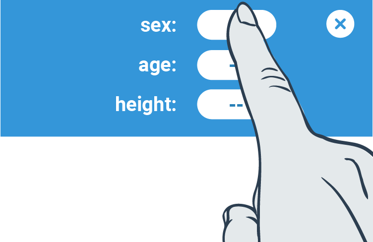
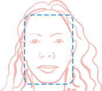

Simple instruction
1 – Find a good lighting position
Good lighting is typically found in front of a window or in a brightly lit room.
Poor contrast; subject is top lit with strong shadows.
Poor contrast; the subject isn’t lit and the background is much brighter.
Poor contrast; the subject is lit from one side with strong shadows over the face.
Ideal diffuse lighting; the subject and the background is evenly lit from multiple sources.
2 – Enter your biometrics: sex, age and approximate height
3 – Centre your face in the viewfinder, then press 'start'
Before taking the measurement, the blue outline must be centred within the viewfinder.

4 – Stay still during the measurement
If you can’t hold your phone still, steady it against an object or in a stand, see below.
The measurement will take 40 seconds. A countdown timer, pulse and Measurement Signal Quality will display during the measurement. Chimes will sound every 10 seconds.